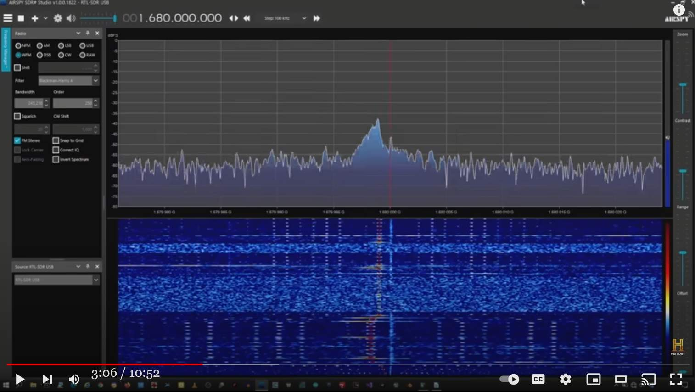

Skinwalker ranch : 小型ロケット発射 → 1.60000GHz の電磁波と orb が出現 → この謎を推理する
前置き
- NIDS の John Alexander を迎えて、夜間に小型ロケットを打ち上げてどうなるかの実験を行った動画映像。手抜き
- Skinwalker ranch を突っついて刺激し、怪奇現象を誘発させるために小型ロケットを打ち上げた。すると… - スペクトラム・アナライザーで謎の電磁波を観測。周波数はきっちり 1.60000GHz （有効数字はもっとありそうだが、後述の理由で 6桁としておく）だった。 - さらに orb が出現し、カメラで撮影された。 - かつて NIDS が出した結論は portal が存在するというもの。コメント
- orb が出現したのは EMF 異常が原因だろう。小型ロケットを打ち上げると、ロケットの煙が若干の導電性をもつために長い避雷針と同様の効果が生じる(*1)。つまりその場所の EMF 異常を強力に増大させる筈。 - 怪奇現象が発生する時に 1.600GHz の他に 1.68GHz の電磁波が観測されている（下の映像：有効数字6桁できっちり 1.68GHz になっていることに注意）。下のふたつの映像は台地をボーリングした時、観測されたもの。この時、Skinwallker ranch の管理人が鼓動が乱れ、意識を失い、緊急入院している(*2)。  - これもたぶん EMF 異常が原因の筈。たぶん現場に多数設置された観測機材の一部が EMF 異常で誤動作しその周波数の電磁波を発生させているのだろう。 - 自然現象で 1.600GHz とか 1.680GHz というキリがよい周波数になることはありえない。同じ理由で ET や別空間からの電磁波という可能性も無い。人間が製造した機器の誤動作だからキリがよい周波数になる。たぶん問題の観測機材の内部で水晶発振器の出力を逓倍しているからキリの良い周波数になるのではないか。(追記参照)(*1)
- その証拠に打ち上げたロケットが残した噴煙の経路にそって、雷が走る動画が下。Rocket-Triggered Lightning
(*2)
- 心臓には洞房結節があり、そこで発生させた電気パルスで心筋の収縮タイミングを制御することで鼓動している。Skinwalker ranch では電池の安全回路を遮断したり破壊するほどの強烈な EMF 異常が何度も発生している(*3)。 - そのような場合、この洞房結節やプルキンエ線維の活動に干渉してパルスが乱れる→鼓動が乱れる→脳への血流低下→失神 …という機序だろう。Skinwalker ranch での EMF 異常は極めて狭い範囲に集中し、時にはガンマ線も伴う(*4)のが特徴。(*3)
- 電池の安全回路を遮断したり破壊するほどの強烈な EMF 異常… - この件は過去記事にしたと思ったが見つからない。なので添付の参考資料（暫定版：書式欠落）でその機序を説明しておく。(*4)
- ガンマ線を伴う… Travis Taylor 博士：Skinwalker Ranch で謎の放射線を浴び、骨棘ができて手術を受けた。 (2021-05-02)- Skinwalker ranch から遥かに離れた自宅（alabama 州）に戻ったら、自宅の電子機器が頻繁に故障。 - さらに自宅で正体不明のマイクロ波やガンマ線を検出。 ref: Travis Taylor 自身が体験したヒッチハイカー現象 (2022-06-19)音声書写（自動生成）
▼展開
0:01 TRAVIS TAYLOR: We decided it was time to reach back 0:03 out to someone who we know was not only a former investigator 0:05 on the ranch but also had his own experiences 0:08 with bizarre cattle incidents-- retired 0:10 Army Colonel John Alexander. 0:13 Thanks for coming out. We appreciate it. 0:14 OK. 0:16 Colonel Alexander was a key member of billionaire Robert 0:19 Bigelow's team, who studied phenomena on the ranch 0:21 for two decades starting back in 1996. 0:24 So given everything we've been experiencing recently 0:27 at the triangle, we were grateful 0:29 that he agreed to come back and share information that 0:31 could help our investigation. 0:34 We would like to see if you have some insight from your past 0:38 here that might spur us into some other experiments 0:42 that we might like to do. 0:44 A lot of times when we do have these anomalies, 0:46 we are detecting a strange signal that we can't identify 0:50 at 1.6-something gigahertz. 0:53 OK. 0:54 And so I guess the question we would have is during the time 0:58 that you guys were here, did you record 1:03 or see things that looked like this signal at 1.6 gigahertz? 1:07 We've heard about opening portals. 1:10 What can you tell us about those? 1:12 The closest to what you're asking 1:15 is the incident out of-- near the second homestead, you know? 1:19 Something moving through the Russian olives 1:22 out there, through the trees, where you're aware 1:26 there's kind of a slight distortion. 1:28 You didn't see a thing. 1:29 It was more of distortions moving. 1:32 After their investigation ended, 1:33 the NIDS team put forth the idea that a portal connected 1:37 to another dimension causes the phenomena 1:40 that happened on the ranch. 1:41 And I don't know if that could really explain what's happened 1:43 during our experiments, but we've seen some crazy stuff 1:46 at Homestead Two as well. 1:48 So what I'm taking from this is that there is a long history 1:50 of unusual phenomena without an identifiable source 1:53 in this basin. 1:55 And I'm learning that there were no answers produced as a result 2:00 of the previous research here. 2:03 That's kind of surprising-- 2:04 Right. 2:06 --because that burden that we're bearing 2:07 today is that our own conclusions 2:09 don't make sense to us yet. 2:11 It's been a frustration. 2:12 Almost become a joke. 2:14 Yes, but I think you're operating under the illusion 2:16 that you're in control. 2:18 You're not in control. 2:20 There's an it that's in control. 2:27 TRAVIS TAYLOR: Yeah, right in here in all these damn weeds. 2:30 We waited until nightfall to go back out near Homestead Two 2:34 to see if we can stimulate more phenomena to appear that might 2:37 prove or disprove Colonel Alexander and NIDS theory 2:41 that a portal might exist on Skinwalker Ranch. 2:43 Now the plan was to use what's become 2:45 our tried-and-true method for stimulating 2:47 phenomena-- launching a rocket. 2:49 We are ready to launch. 2:50 We also set up a spectrum analyzer to look 2:53 out for any strange RF energy. 2:55 OK, so this is up and running. 2:56 All right, here we go. 2:58 5, 4, 3, 2, 1. 3:13 BRYANT ARNOLD: Oh, got the chute. 3:14 TRAVIS TAYLOR: It got the chute. 3:16 That's coming down right over here. 3:19 Coming down fast. 3:20 TRAVIS TAYLOR: That's good. 3:22 BRYANT ARNOLD: Chute hasn't opened. 3:23 TRAVIS TAYLOR: Nope. 3:25 Boom! 3:27 Caleb, you got it? 3:28 Well, you had to land it right in a tree. 3:32 I'm looking for any UAPs. 3:36 TRAVIS TAYLOR: I don't see nothing. 3:38 While Caleb's getting that, I'm going to go over here and check 3:40 the instruments and stuff. 3:42 He may need some help. 3:43 I don't know. 3:44 Caleb, you need help? 3:46 I got it. 3:48 I can't figure out why the chute didn't open, though. 3:52 Erik, are you doing something at 1.6? 3:55 I'm not broadcasting. 3:57 CALEB: What are you seeing? 3:58 TRAVIS TAYLOR: A signal? 4:00 1.60000. 4:04 When the chute failed to open and the rocket 4:06 crashed down near the homestead, I didn't 4:09 want to jump to conclusions. 4:10 But then right on cue, Erik's spectrum analyzer registered 4:13 that freaky 1.6 gigahertz energy level that 4:17 has coincided with almost every phenomena 4:19 we've witnessed out here. 4:21 We've had a hell of a day. 4:23 TRAVIS TAYLOR: That mysterious 1.6 gigahertz frequency 4:26 sound suddenly stopped. 4:28 Now, I'm not sure, but to me, it sounded like some sort 4:31 of communication signal. 4:33 It's crazy to think about, but we 4:34 need to try and figure out what in the heck it could be 4:38 and why we're receiving it. 4:40 All right, well, let's load up. 4:42 All right. 4:43 OK. 4:50 TRAVIS TAYLOR: What's going on, Erik? 4:53 I'm looking through some footage. 4:54 Yeah? 4:55 Yeah, I've got something to show you. 4:57 TRAVIS TAYLOR: The day after our night experiment at Homestead 4:59 Two, Erik called us in to review something 5:01 in his surveillance footage that got him both excited 5:05 and a little freaked out. 5:06 You know, we've got all those new cameras out 5:08 at the homesteads. 5:09 So you know, I get plenty of critter activity. 5:13 You know what it looks like when you've 5:15 got a moth, or some kind of insect, or piece of debris 5:19 flying across your field of view? 5:20 But I've got something here that doesn't fit in. 5:23 Really? 5:24 Yeah. 5:25 It happened just last night after our experiment. 5:32 TRAVIS TAYLOR: What on Earth is that? 5:35 The hell is that? 5:37 OK, so let's play this through, 5:39 and I really want your thoughts on what this might be. 5:43 TRAVIS TAYLOR: Well, it's behind the tree, 5:44 so it's far enough away. 5:46 ERIK BARD: Right. - Play that again. 5:48 ERIK BARD: Sure. 5:49 THOMAS WINTERTON: You can see the other particles around. 5:51 TRAVIS TAYLOR: Well, it's leaving a trail. 5:54 Go back, Erik. ERIK BARD: Sure. 5:55 - Go back about-- - Sure. 5:57 Yeah, point out the trail. 5:58 Does that camera lag? 6:00 ERIK BARD: It could be. - Stop right there. 6:01 ERIK BARD: Uh-huh. 6:03 You can even see the trail behind it. 6:04 Now let it-- watch it go. 6:05 It leaves a trail behind it as it goes. 6:08 All right. Stop. 6:09 You see it? 6:10 ERIK BARD: Sure. 6:11 TRAVIS TAYLOR: See the path there? 6:13 What's the frame rate of this camera? 6:15 These are set, I believe, to 24. 6:17 I-- 6:19 Well, that's not moving much faster than that. 6:21 So it shouldn't be causing frame delay. 6:24 So it's not a bug inside the field of view 6:27 because it goes behind this tree, right? 6:30 BRYANT ARNOLD: Well, it's not-- look at the bugs, Travis. 6:32 You can see the bugs zooming by. TRAVIS TAYLOR: Yeah. 6:34 BRYANT ARNOLD: This thing looks like a balloon 6:35 floating around on the wind. 6:36 TRAVIS TAYLOR: Yeah, and then it goes behind the tree over here. 6:41 ERIK BARD: Yeah, but the movement is very organic, 6:44 I would say. 6:45 It's irregular. 6:46 It's not just smoothly moving through the scene. 6:48 Well, the interesting thing is you look 6:49 at the grass and the trees. 6:52 I don't see really any wind, you know? 6:54 TRAVIS TAYLOR: Good point. 6:55 BRYANT ARNOLD: And so you see it. 6:56 It drifts over to the right with no wind going that direction. 6:59 And then it drifts and just slowly-- like I said, 7:01 it almost looks like a balloon just floating around. 7:05 THOMAS WINTERTON: That's not being 7:06 affected by the same forces that are carrying the rest of it. 7:09 It's not a balloon because a balloon 7:11 would have been more stochastically 7:13 or [inaudible] moving about. 7:15 And that looks like it's moving with intent. 7:21 Comes along, decides it doesn't want to be here, 7:23 then decides to go off this way. 7:25 This is unique. 7:26 You know and it's-- 7:28 I don't think I've seen anything. 7:29 You've never shown me anything close to that. 7:31 Well, it goes in front of those trees 7:33 and behind that tree. 7:34 So that tells us it's at least 30 feet away. 7:37 So it's about the size of a volleyball. 7:40 Think of it this way. 7:42 In one night, one span there, we see 7:45 a strange communication beam and then we see this thing. 7:51 Is there a connection? 7:53 What's particularly bizarre about this phenomenon 7:55 is it happened just after our rocket experiment 7:58 at Homestead Two when we heard that really 8:00 strange 1.6 gigahertz signal. 8:03 It all looks to be connected. 8:05 I just don't know how or why yet. 8:07 In the beginning, it almost looks like it changes 8:09 shape a little bit to me. 8:11 Is it more, though, looking at the end would be a circle, 8:15 but then as it turns, a cigar shape because you're 8:19 getting more of the 3D? 8:21 Just like this, right? 8:22 If you're looking at this end on, you think it's a circle, 8:24 right? - Sure. 8:25 You look at this, it looks like a line or-- 8:27 OK. 8:28 --something, you know, cigar-shaped. 8:30 I tell you what it reminds me of-- the Tic Tac UAP video. 8:35 The UAP that appeared in the Tic Tac video that was recorded 8:38 by the USS Nimitz group in 2004 appeared 8:42 to be cigar-shaped when viewed from certain angles. 8:44 But it was reported to look more spherical by the Navy pilots 8:48 when it flew straight towards them. 8:50 Do any of those objects move around 8:52 so organically as we see? 8:54 Yes, and they amorphously change shape depending 8:57 on the direction they turn. 8:59 So we've measured a signal many times 9:02 when we've seen phenomena occur specifically 9:05 around 1.6 gigahertz. 9:08 We're seeing whatever this thing is. 9:11 And interestingly enough, at the same instant, 9:14 we see this signal at 1.6 gigahertz. 9:18 It's pretty bizarre. 9:21 It's crazy is what it is. 9:22 I don't know what to say of this, 9:24 but I would say you've captured a UAP on camera here, Erik, 9:29 and we don't know what it is. 9:31 Well, this is just one more case of strange activity out 9:34 at the homesteads. 9:35 You know, Homestead Two is a place where 9:36 we see a lot of this stuff. 9:38 So I'm not going to be satisfied until I've 9:41 spent some time doing some image processing on this. 9:43 Sure. 9:44 And I'll come back to you guys and let 9:46 you know if I find anything. - All right. 9:46 Thanks, guys. 9:47 Good job, Erik. 9:50 ERIK BARD: Our fascination, our speculation, 9:52 about the ranch phenomenon and about how 9:54 the ranch fits into the larger picture has only been elevated. 9:58 We realize we're not dealing with a simple problem set 10:01 but one that is very complex.DeepL 原文不完全
▼展開
TRAVIS TAYLOR: 私たちは、元調査員だけでなく、元調査員であったことを知っている人物に 元捜査官というだけでなく、牧場での経験を持つ人物に手を貸すことにしました。 この牧場の元調査員であると同時に 牛に関する奇妙な事件で、 ジョン・アレキサンダー陸軍大佐です ご出席ありがとうございました。感謝します はい アレキサンダー大佐は 億万長者ロバート・ビグローのチームの 主要メンバーでした ビグローのチームの 主要メンバーでした 1996年から20年にわたり 牧場での現象を研究しました 最近の出来事を考えると... この三角地帯で このような状況の中、ビグロー氏が再び来日し、情報を共有してくれることは 私たちの捜査に役立つ情報を提供してくれることになりました。 私たちは、あなたが過去に経験したことの中から、私たちが他の実験をするためのヒントを得ることができるかどうかを確認したいのです。 他の実験をするためのヒントになるかもしれません。 してみたいと思っています。 多くの場合、このような異常が発生した場合、 識別できないような奇妙な信号が 1.6数ギガヘルツで。 なるほど。 そこで質問なのですが、あなた方がここにいる間に あなた方がここにいる間に 1.6ギガヘルツの信号のようなものを見たり録音したりしましたか？ ポータルが開くという話を聞きました。 それについて教えてください。 あなたの質問に最も近いのは 2番目の家の近くでの事件です ロシアンオリーブの中を何かが動いていた 木々の間を通り抜けると... 少し歪んでるが 何も見えませんでしたが むしろ歪みが動いていたんです。 調査終了後 防衛研究所は、異次元につながるポータルが現象を引き起こしているという 異次元につながるポータルが、牧場で起きた現象を引き起こしているという という考えを示しました。 それで本当に説明がつくのかどうかはわかりませんが、私たちの実験では 実験中に起こったことを説明できるかどうか わかりませんが ホームステッド2でもおかしなことがありました ホームステッド2でも同様に つまり、私が言いたいのは、長い歴史の中で、特定できないまま この流域には原因が特定できない異常な現象が この盆地には そして、これまでの研究の結果、何の答えも出なかったということです ということです。 それは驚きです そうですね。 --なぜなら、今日、私たちが負担しているのは 今日、私たちが背負う重荷は、私たち自身の結論がまだ意味をなしていないということです。 まだ理解していないのです。 それはフラストレーションです。 ほとんど冗談のようなものです。 そうですね、でもあなたは自分がコントロールしているという 錯覚している コントロールできていない 支配しているのは「それ」なんです。 そう、この雑草の中にね 日暮れまで待ってホームステッド2の近くに戻ったんだ アレックス大佐を証明または反証するために 現象を刺激できるかどうか見るために アレクサンダー大佐と 防衛省の理論が証明されるかどうか アレクサンダー大佐と NIDSの理論を 証明または反証するためだ 計画はこうだ... ロケットを発射して- ロケットの打ち上げだ 発射準備完了 スペクトラムアナライザーも 用意した スペクトラムアナライザーを設置し、奇妙なRFエネルギーがないかを調べます。 OK、これで準備完了です。 よし、始めるぞ 5, 4, 3, 2, 1. シュートだ シュートされたぞ こっちに来るぞ 早く降りてきて いい感じだ シュートはまだ開いてない ダメだ やった！ カレブ、どうだ？ 木にぶつかるように 着陸させたんですね UAPを探してるんだ 何も見えませんね カレブに任せて、私はこっちで計器類をチェックする 器具とかを調べてみる 彼は助けが必要かもしれない どうだろう？ ケイレブ 何か手伝おうか？ ああ なぜパラシュートが 開かないのか分からない エリック 1.6で何かやってるのか？ 放送してません 何を見てるんだ？ 信号？ 1.60000. パラシュートが開かず ロケットが墜落した時 私は結論に飛びつきたくなかった 結論に飛びつきたくなかった しかし、エリックのスペクトラムアナライザーが 1. 1.6ギガヘルツの異常なエネルギーレベルを記録した。 ほぼすべての現象と一致している。 ほぼ全ての現象と一致している。 今日は地獄のような一日だった。 その不思議な1.6ギガヘルツの周波数は 音が突然止まりました よく分かりませんが、私には、ある種の通信信号のように聞こえました。 通信信号のように聞こえました。 考えるだけで、おかしくなります。 それが一体何なのか、なぜ私たちがそれを受信しているのかを解明する必要があります。 解明する必要があります よし、じゃあ、積み込もう。 よし よし エリック、どうしたんだ？ 映像を見てるんだ そうなのか？ あなたに見せたいものがあります ホームステッド2での実験の翌日だ エリックは監視カメラの映像を確認するために 我々を呼び出した 監視カメラの映像を見て 興奮し、少し怖くなった 新しいカメラを設置したんだ ホームステッドで だから動物の動きがよく見えるんだ。 蛾がいる時とか 蛾とか昆虫とか破片とかが 視界を横切るんだ でもここには そぐわないものがあるんだ そうなんですか？ ええ ちょうど昨夜 実験の後に起きたんだ それは一体何なんだ？ 一体何なんだ？ では、これを通しで見てみましょう これが何であるか ご意見をお聞かせ下さい まあ、木の後ろですね。 十分な距離がありますね エリック・バルド: そうです。- もう1度再生して はい 他の粒子も見えますね。 痕跡を残してるんだ 戻って エリック はい - 戻って... そうだ 痕跡を指摘しろ カメラは遅れてる？ そうかもしれない - そこで止めて そうだ 後ろのほうにも見えるだろ 行ってみてくれ 進むにつれて 跡形もなくなっていく よし 止まって 見えるか？ ええ この道が見えるか？ このカメラのフレームレートは？ これは24に設定されてますね I-- それ以上の速度は出ないから だからフレーム遅延は起きないはずです。 つまり視野内のバグではありません この木の陰に隠れているのですから。 トラヴィス：そうではありません。 虫を見ればわかるだろ そうですね 風船みたいなもんだ 風船みたいだ そして、こっちの木の後ろに行くんだ。 でも、その動きはとても有機的です。 というか。 不規則なんです。 シーンの中をスムーズに移動しているわけではありません。 さて、面白いのは、草や木を見ると 草や木を見てください。 本当に風が吹いているようには見えないんです。 いい指摘ですね。 そして、それを見てください。 風もないのに右へ流れていく。 それからゆっくり流れて...さっき言ったように 風船が浮いているように見えます。 THOMAS WINTERTON: それは、風船を運ぶのと同じ力の影響を受けていません。 それは他の部分を運んでいるのと同じ力の影響を受けていません。 それは風船ではありません。 風船はもっと確率的に 気球ならもっと確率的に動くでしょうから。 しかし、これは意図的に動いているように見えます。 ここに来たのは、ここにいたくないと思ったからです。 そして、この方向に移動することにしました。 これはユニークですね。 それに... 私は何も見ていないと思う。 それに近いものを見せてくれたことはない。 あの木の前と あの木の後ろにも ということは、少なくとも30フィート離れているということです。 つまりバレーボールくらいの大きさです。 このように考えてください。 ある晩、あるスパンで、私たちは奇妙な通信ビームを見ました。 奇妙な通信ビームを見ましたが、その後、これを見ました。 何か関係があるのでしょうか？ この現象で特に奇妙なのは ホームステッド2でのロケット実験のすぐ後に起こったことです ホームステッド2でのロケット実験の直後に起こったことです。 1.6ギガヘルツの奇妙な信号が聞こえました。 すべてがつながっているように見えます。 ただ、その方法と理由はまだ分かっていません。 最初のうちは、ほとんど形を変えているように見えますが 私には少し形が変わっているように見えます。 端から見ると円形なのですが、もっとなのでしょうか。 葉巻のような形になっているのは、3D的な要素が強くなっているからでしょうか？ 3Dになったから？ ちょうどこんな感じでしょうか。 この端っこを見てたら、円だと思うじゃないですか。 そうでしょう？- そうです。 これを見ると、線に見えたり... そう --葉巻のような形だ 思い出すのは...チックタックのUAPビデオだ チックタックのビデオに登場するUAPは USSニミッツグループによって録画されたものです 2004年にUSSニミッツが撮影したビデオに映っていたUAPは ある角度から見ると葉巻のような形をしているように見えます。 しかし、海軍のパイロットによると、まっすぐ飛んできたときは、もっと球状に見えたそうです。 しかし、海軍のパイロットによると、まっすぐ飛んできたときは、もっと球状に見えたそうです。 これらの物体は、私たちが見ているように有機的に動き回るのでしょうか？ 有機的に動いているのでしょうか？ そうです。 回転する方向によって形が変わります。 だから、私たちは何度も信号を測定して 1.6ギガヘルツ付近で特異的な現象が起きているのを見たとき 1.6ギガヘルツのあたりで。 これが何であれ、私たちは見ているのです。 そして興味深いことに、同じ瞬間に、 1.6ギガヘルツでこの信号が見えるのです。 かなり奇妙なことです。 クレイジーとしか言いようがありません。 これは何と言ったらいいのかわかりません。 UAPをカメラで捕らえたと言えるでしょう。 我々はそれが何であるか分からない。 これは奇妙な活動の もう一つの例です ホームステッドで ホームステッド2はこのような現象が このようなことがよくあるんです だから満足するつもりはない 画像処理に時間をかけないとね もちろんです。 何か分かったら、また連絡します お知らせします。- わかったよ。 ありがとう、みんな よくやった エリック "私達は牧場現象に魅了され" "様々な憶測をしています "牧場 "現象やそれがどのように "牧場 "がどのようなものであるかについての推測は膨らむばかりです。 我々は単純な問題を扱っているのではなく 非常に複雑な問題であることに気づきました。動画(10:15)
ALIEN PORTAL Sparks Suspicions - "You're Not In Control" | The Secret of Skinwalker Ranch (Season 3)
(追記：2022-11-05) - 1.6GHz の周波数はどうやら衛星通信システムで使われているらしい。 - ということは、Skinwalker ranch に設置された衛星通信システムが EMF 異常で誤動作しているのだろう。 - 1.68GHz という周波数も下に一致する。Helical Antenna 1.4~1.68GHz SMA Male Connector Antenna 4 Arm for Aerospace Meteorology Positioning Relay Electronic Component(Blue) ref: https://www.amazon.com/1-4-1-68GHz-Connector-Meteorology-Positioning-Electronic/dp/B09FTLQMQHDeepL
概要 1.6GHz衛星EPIRBシステムの運用前実験を調整するためのINMARSAT理事会および衛星EPIRBの搭載義務化に関するIMOの海上安全委員会の決定を受けて、1986年11月から実証実験が行われています。世界的な海上遭難安全システム（GMDSS）の重要な要素であるこのシステムのデモンストレーションのために、大西洋地域にシステムが設置されました。実証実験のために、ドイツ連邦共和国は11個のEPIRBを希望する参加者に無償で提供しました。INMARSATの議長のもと、実証実験の調整グループが結成されました。実証実験の主な目的は、EPIRBを実際に運用し、EPIRB本体だけでなく地上設備も試験することで、システム全体に対する信頼性を確立することです。実証実験は、86年11月、ドイツのRV船ガウス号にLバンド衛星EPIRBを搭載して開始されました。その後、他の船にも搭載されました。ここでは、詳細な試験計画と最終的な試験結果、および今後のシステム開発の見通しについて報告する。 ref: Successful demonstrations of the 1.6 GHz satellite EPIRB system | IET Conference Publication | IEEE Xplore - https://ieeexplore.ieee.org/document/10431DeepL
1.6GHz帯衛星EPIRBシステムの実証実験に成功 1.6GHz衛星EPIRBシステムの実証実験が成功したことを報告します。この実証実験は1986年11月に開始され、大西洋地域で実施されました。その結果、インマルサットのカバーエリア全域、標高0度までの様々な海象条件下で、運用可能なシステムが、信頼性が高く簡単な方法で迅速な警報ができることが示されました。1987年9月末までの1104回の送信のうち、不成功はわずか8回であり、99％以上の成功率であった。このEPIRBは、グローバルな海上遭難安全システムの重要な要素になるであろう。 ref: SUCCESSFUL DEMONSTRATIONS OF THE 1.6 GHZ SATELLITE EPIRB SYSTEM - https://trid.trb.org/view/401623 (2022-11-04) (2022-11-05)
参考資料
履歴 (2022-09-26) 複数の記事で分散して扱っていた内容を統合→要約版（本記事） (2021-08-15) 元記事作成 前置き UFO 遭遇で電池が急速に空になる現象が頻繁に報告されている。同様に Bigfoot との遭遇でも同様の現象が報告されている。 特に、Skinwalker Ranch では NIDS の科学者が何度も繰り返して「数秒で充電池が空になる現象」を観測した。 NIDS の科学者は here's such a 41:38 strong electromagnetic field it would 41:41 drain batteries in in just seconds と判断しているが、これはたぶん間違っている。つまり、強い電磁場が電池を空にしたのではない。 電池が急速に空になったといわれる現象の謎は全く別の機序で説明できる。それを以下で説明する。 謎を解く 第一に、充電式でない使い捨てタイプの電池ではこの現象は起きない筈。つまり、電池が急速に空になったという報告はすべて充電式電池でのみ起きている筈。 充電池が急速に（時には数秒で）空になったという現象も電池の化学エネルギーが消えたのではなく（化学反応速度からしてありえない）、充電池に内蔵された制御回路とセンサーが強い電磁界（ガンマ線＝波長が短い電磁波）で誤動作し（or fail-safe 機能が作動し）出力を遮断しためだろう。つまり充電池の化学エネルギーは失われていない筈。 最近の充電池は例外なしに性能と安全確保のために制御回路とセンサーで充放電を緻密に制御している。こういった様々な安全策が施されているからバッテリー本体に釘を打ち込んでも発火しないようになった。 Skinwalker ranch では超常現象発生時に発生源が不明のガンマ線が観測されていた。現場にガンマ線が飛び交っていたとすると、電子機器の誤動作はそれで十分に説明がつく。電子機器の集積回路もセンサーもガンマ線を浴びれば機能しなくなる。 結論 現場の EMF 異常（ガンマ線もこれに含まれる）が充電池に内蔵された制御回路とセンサーを誤動作させ（or fail-safe 機能が作動し）出力を遮断しため充電池が空になったと誤解した。 なので、充電池本体の化学エネルギーは枯渇していない。 仮説を裏付ける証拠 1950年代から1980年代にかけて、UFOの接近によって車のエンジンが停止したという証言が数多くあった。そのような場合、UFOが去るとエンジンは再びかかるようになっていた。 つまり、車のバッテリーが空になっていなかった。この時代の車のバッテリーには、現代の充電式バッテリーのような制御回路やセンサーが搭載されていないためにバッテリーは UFO が去った後にも機能した。 反証方法 上記の私の説（仮説）には反証可能性がある。反証方法は以下のふたつ。 （制御回路やセンサーが搭載されていない）使い捨てタイプの電池でも同じ現象が生じることを示せば反証できる。 実際に「急速に空になった充電池」を分解し、制御回路やセンサーを取り除き、充電池本体の中の化学エネルギーがほぼ完全に失われていることを示せば、反証できる。 関連 UFO による自動車エンジンへの干渉：特にエンジンが勝手に再始動する機序（全体） (2012.08.14) UFO はジーゼル車のエンジンを止めない （2012.07.30） UFO はガソリンエンジンを止めてもジーゼルエンジンを止めないという具体例 (2014-05-08) コンドン・レポート：UFO による自動車のエンジンへの干渉（途中：その2） (2013-03-29) 【編】Steve Ward : Bigfoot や幽霊兵隊の出現で、車のエンジンが停止 (2021-12-03) (2022-11-04)
初出
【編】Skinwalker ranch : 小型ロケット発射 → 1.60000GHz の電磁波と orb が出現 (2022-11-04)